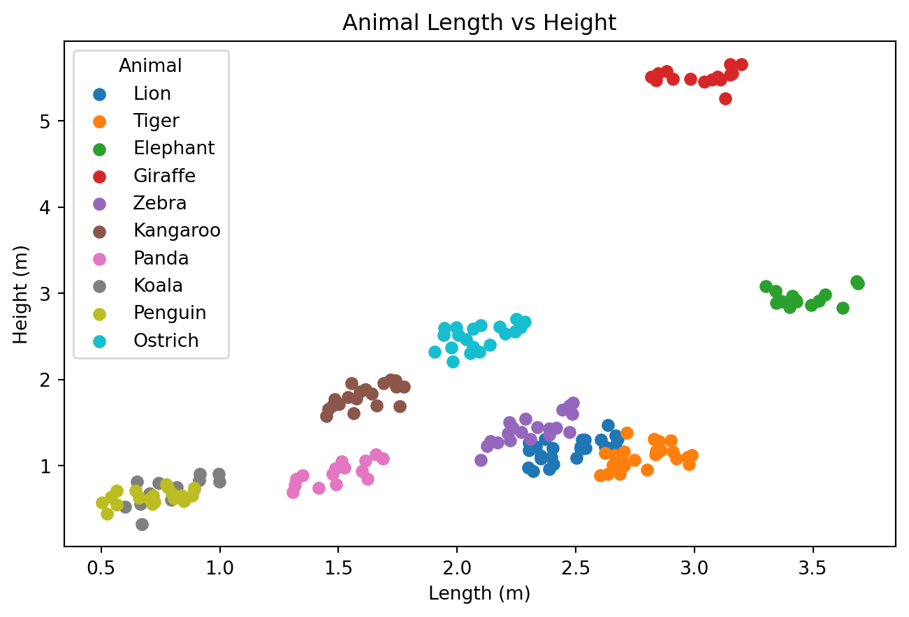
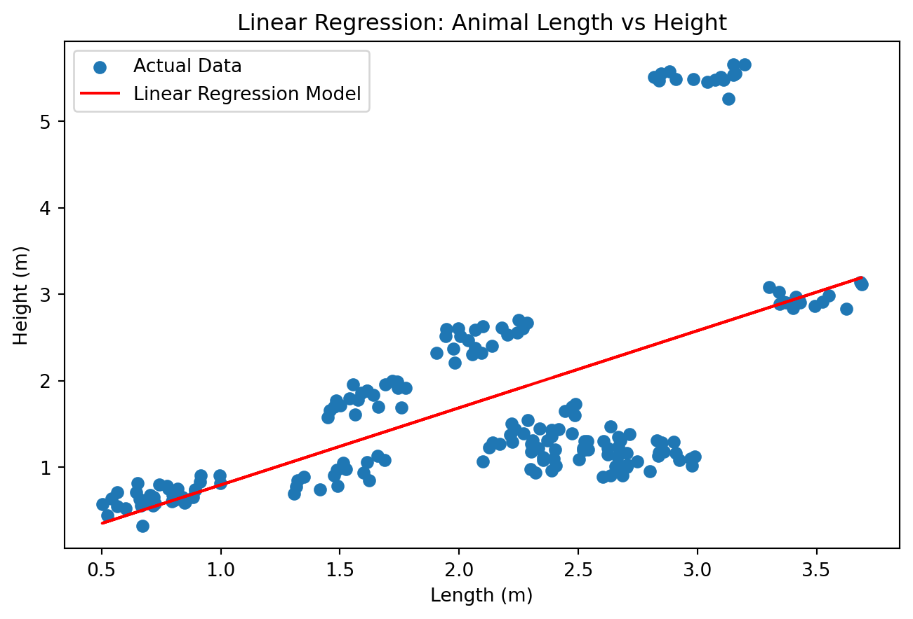
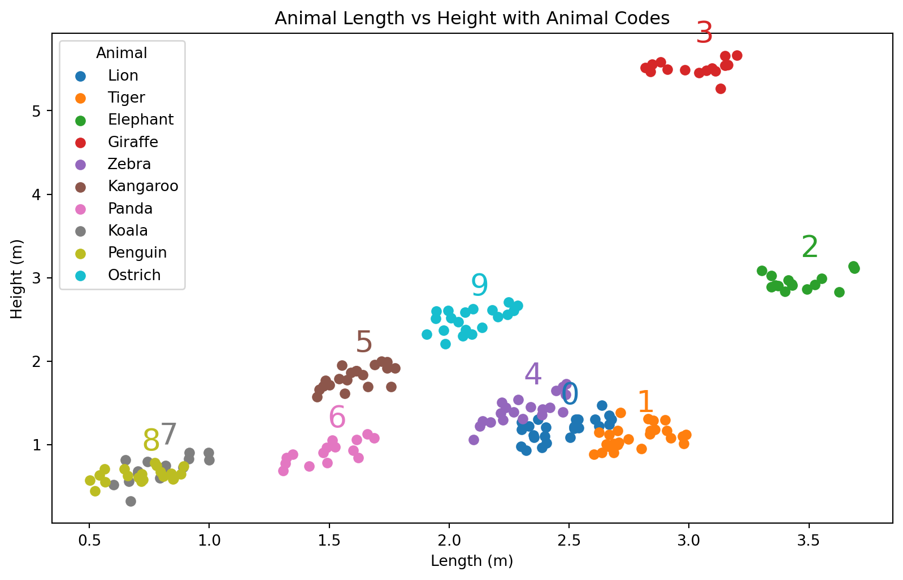
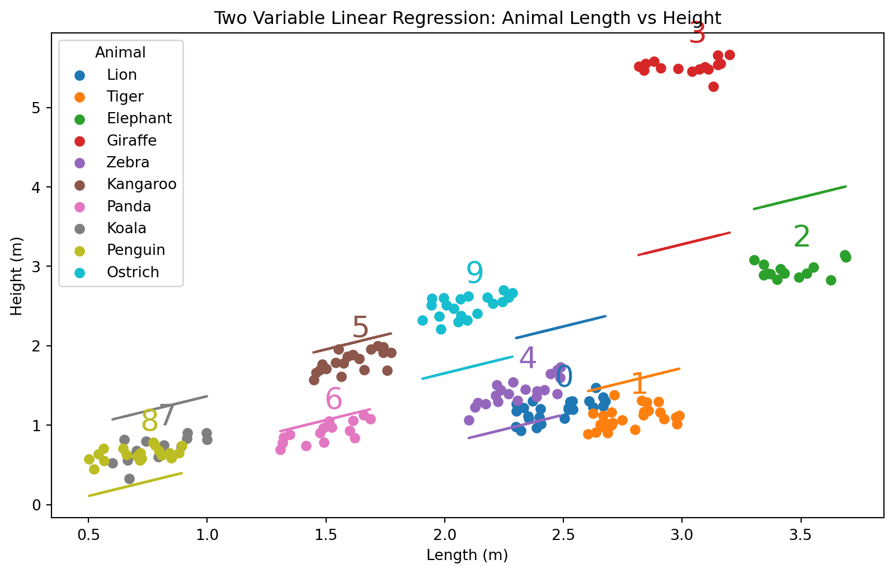
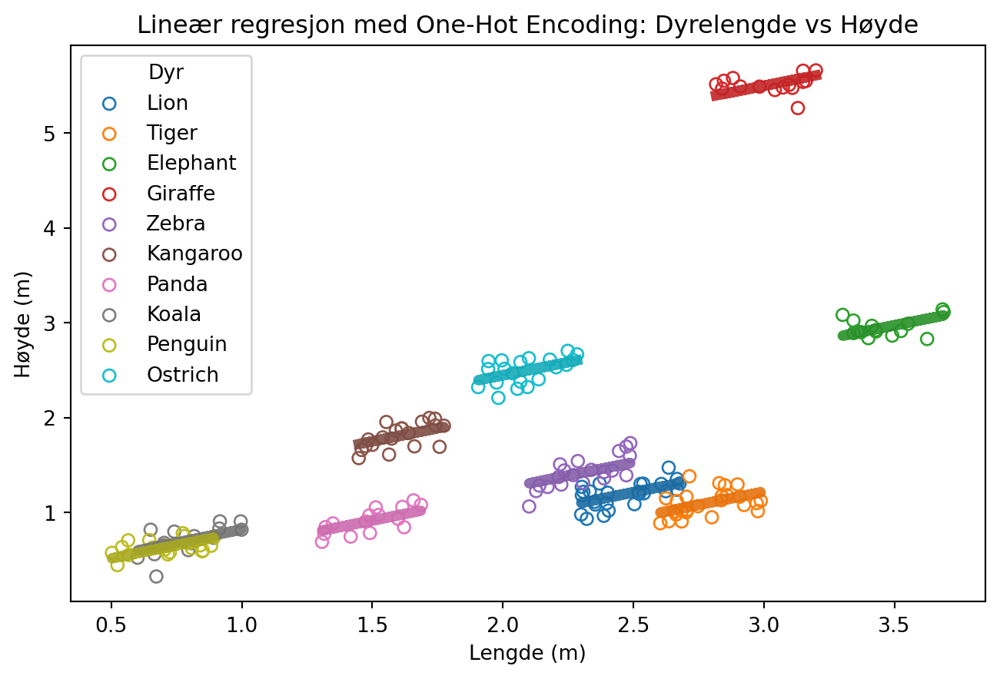

| Animal | Length | Height | |
|---|---|---|---|
| 74 | Giraffe | 3.160980 | 5.550875 |
| 97 | Zebra | 2.473217 | 1.391715 |
| 82 | Zebra | 2.387562 | 1.359507 |
| 30 | Tiger | 2.663906 | 0.977827 |
| 135 | Koala | 0.891731 | 0.731906 |
| 11 | Lion | 2.300188 | 0.977879 |
| 173 | Ostrich | 2.204087 | 2.531046 |
| 113 | Kangaroo | 1.757694 | 1.691853 |
Forelesningsnotat – Obligatorisk oppgave
Titanic
Men før det
- Høyde og lengde på forskjellige dyr
Plot
Med navn på dyrene
# Lage scatter-plot fordelt på dyr
plt.figure(figsize=(8, 5))
for animal in animal_data['Animal'].unique():
subset = animal_data[animal_data['Animal'] == animal]
plt.scatter(subset['Length'], subset['Height'], label=animal)
# Pynt
plt.title('Animal Length vs Height')
plt.xlabel('Length (m)')
plt.ylabel('Height (m)')
plt.legend(title='Animal')
plt.show()
Envariabel lineær regresjon
from sklearn.linear_model import LinearRegression
# Prepare the data for linear regression
X = animal_data[['Length']]
y = animal_data['Height']
# Create and fit the model
model = LinearRegression()
model.fit(X, y)
# Predict the heights using the model
predicted_heights = model.predict(X)
# Plot the original data and the linear regression model
plt.figure(figsize=(8, 5))
plt.scatter(animal_data['Length'], animal_data['Height'], label='Actual Data')
plt.plot(animal_data['Length'], predicted_heights, color='red', label='Linear Regression Model')
# Add labels and title
plt.title('Linear Regression: Animal Length vs Height')
plt.xlabel('Length (m)')
plt.ylabel('Height (m)')
plt.legend()
plt.show()
\[H(L, N) = \beta_0 + \beta_1 L\]
| H | Høyde |
| L | Lengde |
| \(\beta_i\) | Regresjonskoeffisienter |
Hvordan gjøre det bedre?
- forslag?
Hva med å numerisk kode dyrene?
from sklearn.linear_model import LinearRegression
# Encode the animal names as numbers
animal_data['Animal_Code'] = animal_data['Animal'].astype('category').cat.codes
# Display a random selection of 5 rows from the dataset
display(animal_data.sample(10))| Animal | Length | Height | Animal_Code | |
|---|---|---|---|---|
| 123 | Panda | 1.513314 | 1.052826 | 6 |
| 179 | Ostrich | 2.094572 | 2.322864 | 5 |
| 21 | Lion | 2.522129 | 1.195804 | 4 |
| 89 | Zebra | 2.488357 | 1.730782 | 9 |
| 18 | Lion | 2.397752 | 1.096972 | 4 |
| 154 | Penguin | 0.718516 | 0.649860 | 7 |
| 181 | Ostrich | 1.905576 | 2.322025 | 5 |
| 70 | Giraffe | 3.130335 | 5.265860 | 1 |
| 59 | Elephant | 3.343788 | 2.891703 | 0 |
| 79 | Giraffe | 3.199452 | 5.663396 | 1 |
Illustrasjon av datasettet med tallkoder
# Plot the animal data with animal codes
plt.figure(figsize=(10, 6))
colors = plt.cm.get_cmap('tab10', len(animal_data['Animal'].unique()))
for i, animal in enumerate(animal_data['Animal'].unique()):
subset = animal_data[animal_data['Animal'] == animal]
plt.scatter(subset['Length'], subset['Height'], label=animal, color=colors(i))
# Print the animal code above the average length and height
avg_length = subset['Length'].mean()
avg_height = subset['Height'].mean()
plt.text(avg_length, avg_height + 0.3, f'{i}', fontsize=20, color=colors(i))
# Add labels and title
plt.title('Animal Length vs Height with Animal Codes')
plt.xlabel('Length (m)')
plt.ylabel('Height (m)')
plt.legend(title='Animal')
plt.show()
Lineær regresjon med tallkoder
# Prepare the data for linear regression
X = animal_data[['Length', 'Animal_Code']]
y = animal_data['Height']
# Create and fit the model
model = LinearRegression()
model.fit(X, y)
# Predict the heights using the model
predicted_heights = model.predict(X)
# Plot the original data and the linear regression model
plt.figure(figsize=(10, 6))
colors = plt.cm.get_cmap('tab10', len(animal_data['Animal'].unique()))
for i, animal in enumerate(animal_data['Animal'].unique()):
subset = animal_data[animal_data['Animal'] == animal]
plt.scatter(subset['Length'], subset['Height'], label=animal, color=colors(i))
# Predict heights for the subset
subset_X = subset[['Length', 'Animal_Code']]
subset_predicted_heights = model.predict(subset_X)
# Plot the regression line for the subset
plt.plot(subset['Length'], subset_predicted_heights, color=colors(i))
# Print the animal code above the average length and height
avg_length = subset['Length'].mean()
avg_height = subset['Height'].mean()
plt.text(avg_length, avg_height + 0.3, f'{i}', fontsize=20, color=colors(i))
# Add labels and title
plt.title('Two Variable Linear Regression: Animal Length vs Height')
plt.xlabel('Length (m)')
plt.ylabel('Height (m)')
plt.legend(title='Animal')
plt.show()
- Hvordan gikk egentlig dette? Se nøye etter.
Ligning
\[H(L, N) = \beta_0 + \beta_1 L + \beta_2 N\]
| Symbol | Beskrivelse |
|---|---|
| H | Høyde |
| L | Lengde |
| N | Numerisk kode for dyret |
| \(\beta_i\) | Regresjonskoeffisienter |
Hvordan gjøre det bedre?
- One-hot-encoding
Med one-hot encoding
Vi kan lage one-hot-kodet data med pandas.get_dummies(...)
from sklearn.preprocessing import OneHotEncoder
from sklearn.compose import ColumnTransformer
transformed_data = pd.get_dummies(animal_data, columns=['Animal'], drop_first=False)
display(transformed_data.sample(10))| Length | Height | Animal_Code | Animal_Elephant | Animal_Giraffe | Animal_Kangaroo | Animal_Koala | Animal_Lion | Animal_Ostrich | Animal_Panda | Animal_Penguin | Animal_Tiger | Animal_Zebra | |
|---|---|---|---|---|---|---|---|---|---|---|---|---|---|
| 102 | 1.612779 | 1.886124 | 2 | 0 | 0 | 1 | 0 | 0 | 0 | 0 | 0 | 0 | 0 |
| 147 | 0.999089 | 0.817444 | 3 | 0 | 0 | 0 | 1 | 0 | 0 | 0 | 0 | 0 | 0 |
| 29 | 2.603192 | 0.886041 | 8 | 0 | 0 | 0 | 0 | 0 | 0 | 0 | 0 | 1 | 0 |
| 75 | 2.840005 | 5.470907 | 1 | 0 | 1 | 0 | 0 | 0 | 0 | 0 | 0 | 0 | 0 |
| 150 | 0.645241 | 0.707923 | 7 | 0 | 0 | 0 | 0 | 0 | 0 | 0 | 1 | 0 | 0 |
| 184 | 1.943598 | 2.512495 | 5 | 0 | 0 | 0 | 0 | 0 | 1 | 0 | 0 | 0 | 0 |
| 5 | 2.308569 | 1.217318 | 4 | 0 | 0 | 0 | 0 | 1 | 0 | 0 | 0 | 0 | 0 |
| 67 | 2.909810 | 5.493326 | 1 | 0 | 1 | 0 | 0 | 0 | 0 | 0 | 0 | 0 | 0 |
| 115 | 1.741850 | 1.917258 | 2 | 0 | 0 | 1 | 0 | 0 | 0 | 0 | 0 | 0 | 0 |
| 105 | 1.612423 | 1.885272 | 2 | 0 | 0 | 1 | 0 | 0 | 0 | 0 | 0 | 0 | 0 |
Regresjonsmodell med one-hot-coding
X = transformed_data.drop(columns=['Height', 'Animal_Code'])
y = transformed_data['Height']
model = LinearRegression()
model.fit(X, y)
# Bruke modellen
predicted_heights = model.predict(X)
# Plot de originale dataene og den lineære regresjonsmodellen
plt.figure(figsize=(8, 5))
colors = plt.cm.get_cmap('tab10', len(animal_data['Animal'].unique()))
for i, animal in enumerate(animal_data['Animal'].unique()):
subset = animal_data[animal_data['Animal'] == animal]
plt.scatter(subset['Length'], subset['Height'], label=animal, color=colors(i), edgecolor=colors(i), facecolors='none')
# Prediker høyder for hvert dyr
subset_X = transformed_data[transformed_data[f'Animal_{animal}'] == 1].drop(columns=['Height', 'Animal_Code'])
subset_predicted_heights = model.predict(subset_X)
# Plot regresjonslinjen for hvert enkelt dyr
plt.plot(subset['Length'], subset_predicted_heights, color=np.array(colors(i))*0.9, linewidth=5)
# Pynt
plt.title('Lineær regresjon med One-Hot Encoding: Dyrelengde vs Høyde')
plt.xlabel('Lengde (m)')
plt.ylabel('Høyde (m)')
plt.legend(title='Dyr')
plt.show()
Likning
\[H(L, N) = \beta_0 + \beta_1 L + \sum_{\mathrm{i = \{Lion, Tiger, ...\}}}^{k} \beta_i [\text{er dette en }i\mathrm{?}]\]
La oss se på dette i et litt mindre datasett
import pandas as pd
import seaborn as sns
health = sns.load_dataset('healthexp')
display(health.sample(10))--------------------------------------------------------------------------- ModuleNotFoundError Traceback (most recent call last) Input In [10], in <module> 1 import pandas as pd ----> 2 import seaborn as sns 3 health = sns.load_dataset('healthexp') 4 display(health.sample(10)) ModuleNotFoundError: No module named 'seaborn'
Her bruker vi seaborn kun for å laste inn et datasett. Seaborn gir oss også noen muligheter til pen visualisering i statistikk, for dem som måtte være interessert i det.
Underveisoppgave
Note
- Gjør one-hot encoding av healthexp-datasettet
- Gjør trenings-validerings-splitt av datasettet
- Tren en lineær regresjonsmodell for å predikere life expectancy, med spending som forklaringsvariabel
- Ta med land som forklaringsvariabel i modellen
- Sammenligne nøyaktigehten til modellene
import pandas as pd
import seaborn as sns
health = sns.load_dataset('healthexp')
health_onehot = pd.get_dummies(health, columns=['Country'])
display(health_onehot.sample(10))--------------------------------------------------------------------------- ModuleNotFoundError Traceback (most recent call last) Input In [11], in <module> 1 import pandas as pd ----> 2 import seaborn as sns 3 health = sns.load_dataset('healthexp') 4 health_onehot = pd.get_dummies(health, columns=['Country']) ModuleNotFoundError: No module named 'seaborn'
for i, frame in health.groupby("Country"):
plt.scatter(frame["Spending_USD"], frame["Life_Expectancy"], marker="o", label=i)
plt.xlabel("Expenditure (USD)")
plt.ylabel("Life expectancy")
plt.legend()--------------------------------------------------------------------------- NameError Traceback (most recent call last) Input In [12], in <module> ----> 1 for i, frame in health.groupby("Country"): 2 plt.scatter(frame["Spending_USD"], frame["Life_Expectancy"], marker="o", label=i) 3 plt.xlabel("Expenditure (USD)") NameError: name 'health' is not defined
Start på løsning
health_onehot = pd.get_dummies(health, columns=['Country'], drop_first=False)
display(health.sample(10))--------------------------------------------------------------------------- NameError Traceback (most recent call last) Input In [13], in <module> ----> 1 health_onehot = pd.get_dummies(health, columns=['Country'], drop_first=False) 2 display(health.sample(10)) NameError: name 'health' is not defined
Enkel regresjonsmodell
from sklearn.linear_model import LinearRegression
from sklearn.model_selection import train_test_split
X = np.array(health_onehot["Spending_USD"]).reshape(-1,1)
y = health_onehot['Life_Expectancy']
# Split the data into training and testing sets
X_train, X_test, y_train, y_test = train_test_split(X, y, test_size=0.2, random_state=42)
# Create and fit the model on the training data
model = LinearRegression()
model.fit(X_train, y_train)
# Predict the life expectancy using the model on the test data
predicted_life_expectancy = model.predict(X_test)
# Evaluate the model
from sklearn.metrics import mean_squared_error, r2_score
mse = mean_squared_error(y_test, predicted_life_expectancy)
r2 = r2_score(y_test, predicted_life_expectancy)
# Plot the original data and the linear regression model
plt.figure(figsize=(8, 5))
plt.scatter(X_test, y_test, color='blue', label='Actual Data')
plt.plot(X_test, predicted_life_expectancy, color='red', label='Linear Regression Model')
# Add labels and title
plt.title('Linear Regression: Spending vs Life Expectancy')
plt.xlabel('Spending (USD)')
plt.ylabel('Life Expectancy (years)')
plt.legend()
plt.show()
print(f'Mean Squared Error: {mse}')
print(f'R^2 Score: {r2}')--------------------------------------------------------------------------- NameError Traceback (most recent call last) Input In [14], in <module> 1 from sklearn.linear_model import LinearRegression 2 from sklearn.model_selection import train_test_split ----> 4 X = np.array(health_onehot["Spending_USD"]).reshape(-1,1) 5 y = health_onehot['Life_Expectancy'] 7 # Split the data into training and testing sets NameError: name 'health_onehot' is not defined
En påfallende “god” modell, hva har skjedd her?
from sklearn.linear_model import LinearRegression
from sklearn.model_selection import train_test_split
X = health_onehot.drop(columns=['Life_Expectancy'])
y = health_onehot['Life_Expectancy']
# Split the data into training and testing sets
X_train, X_test, y_train, y_test = train_test_split(X, y, test_size=0.2, random_state=42)
# Create and fit the model on the training data
model = LinearRegression()
model.fit(X_train, y_train)
# Predict the life expectancy using the model on the test data
predicted_life_expectancy = model.predict(X_test)
# Evaluate the model
mse = mean_squared_error(y_test, predicted_life_expectancy)
r2 = r2_score(y_test, predicted_life_expectancy)
# Plot the original data and the linear regression model predictions per country
plt.figure(figsize=(8, 5))
colors = plt.cm.get_cmap('tab20', len(health['Country'].unique()))
for i, country in enumerate(health['Country'].unique()):
subset = health[health['Country'] == country]
plt.scatter(subset['Spending_USD'], subset['Life_Expectancy'], label=country, color=colors(i), edgecolor=colors(i), facecolors='none')
# Predict life expectancy for the subset
subset_X = health_onehot[health_onehot[f'Country_{country}'] == 1].drop(columns=['Life_Expectancy'])
subset_predicted_life_expectancy = model.predict(subset_X)
# Plot the regression line for the subset
plt.plot(subset['Spending_USD'], subset_predicted_life_expectancy, color=np.array(colors(i))*0.9, linewidth=2)
# Add labels and title
plt.title('Linear Regression with One-Hot Encoding: Spending vs Life Expectancy by Country')
plt.xlabel('Spending (USD)')
plt.ylabel('Life Expectancy (years)')
plt.legend(title='Country', bbox_to_anchor=(1.05, 1), loc='upper left')
plt.show()
print(f'Mean Squared Error: {mse}')
print(f'R^2 Score: {r2}')--------------------------------------------------------------------------- NameError Traceback (most recent call last) Input In [15], in <module> 1 from sklearn.linear_model import LinearRegression 2 from sklearn.model_selection import train_test_split ----> 4 X = health_onehot.drop(columns=['Life_Expectancy']) 5 y = health_onehot['Life_Expectancy'] 7 # Split the data into training and testing sets NameError: name 'health_onehot' is not defined
Uten år som forklaringsvariabel
# Drop the 'Year' column from the dataset
health_onehot_no_year = health_onehot.drop(columns=['Year'])
# Prepare the data for linear regression
X = health_onehot_no_year.drop(columns=['Life_Expectancy'])
y = health_onehot_no_year['Life_Expectancy']
# Split the data into training and testing sets
X_train, X_test, y_train, y_test = train_test_split(X, y, test_size=0.2, random_state=42)
# Create and fit the model on the training data
model = LinearRegression()
model.fit(X_train, y_train)
# Predict the life expectancy using the model on the test data
predicted_life_expectancy = model.predict(X_test)
# Evaluate the model
mse = mean_squared_error(y_test, predicted_life_expectancy)
r2 = r2_score(y_test, predicted_life_expectancy)
# Plot the original data and the linear regression model predictions per country
plt.figure(figsize=(8, 5))
colors = plt.cm.get_cmap('tab20', len(health['Country'].unique()))
for i, country in enumerate(health['Country'].unique()):
subset = health[health['Country'] == country]
plt.scatter(subset['Spending_USD'], subset['Life_Expectancy'], label=country, color=colors(i), edgecolor=colors(i), facecolors='none')
# Predict life expectancy for the subset
subset_X = health_onehot_no_year[health_onehot_no_year[f'Country_{country}'] == 1].drop(columns=['Life_Expectancy'])
subset_predicted_life_expectancy = model.predict(subset_X)
# Plot the regression line for the subset
plt.plot(subset['Spending_USD'], subset_predicted_life_expectancy, color=np.array(colors(i))*0.9, linewidth=2)
# Add labels and title
plt.title('Linear Regression with One-Hot Encoding (No Year): Spending vs Life Expectancy by Country')
plt.xlabel('Spending (USD)')
plt.ylabel('Life Expectancy (years)')
plt.legend(title='Country', bbox_to_anchor=(1.05, 1), loc='upper left')
plt.show()
print(f'Mean Squared Error: {mse}')
print(f'R^2 Score: {r2}')--------------------------------------------------------------------------- NameError Traceback (most recent call last) Input In [16], in <module> 1 # Drop the 'Year' column from the dataset ----> 2 health_onehot_no_year = health_onehot.drop(columns=['Year']) 4 # Prepare the data for linear regression 5 X = health_onehot_no_year.drop(columns=['Life_Expectancy']) NameError: name 'health_onehot' is not defined